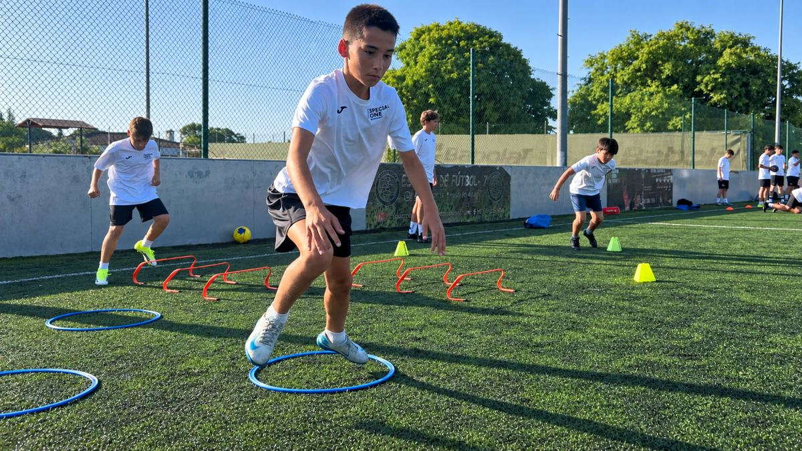

SO Training
SO Training Grupal
Tecnificación en grupos reducidos durante toda la temporada.
El programa permanente de la academia para jugadores y jugadoras que quieren seguir mejorando entre semana, con entrenamientos específicos que complementan lo que hacen en su club.
- Grupos por edad, categoría y nivel
- Corrección individualizada
- Trabajo técnico, táctico, físico y mental
- Entorno exigente y cercano